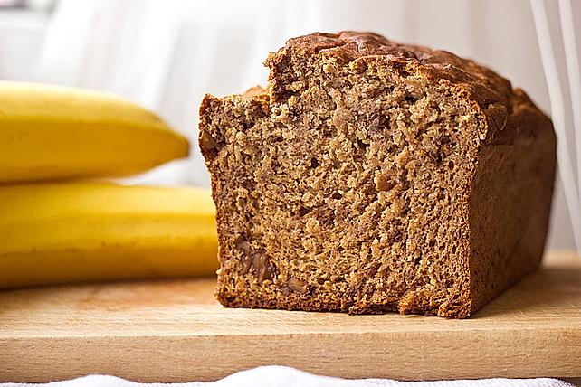

Bananabread

Description
Banana bread - super tasty, wholesome, healthy and wonderfully uncomplicated, also very suitable for small children or as a snack
Ingredients
- 3 Banana(s), very ripe (the darker the better), about 300 g
- 200 g Wholemeal wheat flour, alternatively rye flour, white flour, spelled flour
- e.g. Cinnamon powder (about 1/2 - 1 tsp)
- 100 g Apple, grated, or applesauce without sugar
- ½ pack baking powder
- 2 egg(s)
- 50g Walnuts, chopped, alternatively almonds, hazelnuts
Steps
- Peel the apple, core it and grate it finely (alternatively, you can use apple sauce that hasn't had any added sugar).
- Peel the bananas, add to the apple and mash well.
- Now beat with the two eggs until fluffy.
- Mix the flour, baking powder and cinnamon, add to the banana-apple-egg mash and mix briefly but well. Finally, fold in the chopped walnuts and pour everything into a greased loaf pan. The larger the pan, the flatter the bread.
- Now bake in a hot oven at 180 °C top/bottom heat for about 45 minutes.
- Do a chopstick test.
- Bread rises well in the oven, but collapses a little when it cools (like cheesecake, for example). The dough remains more "sloppy", i.e. more compact than e.g. B. Cake batter. Be sure to let cool completely before slicing!